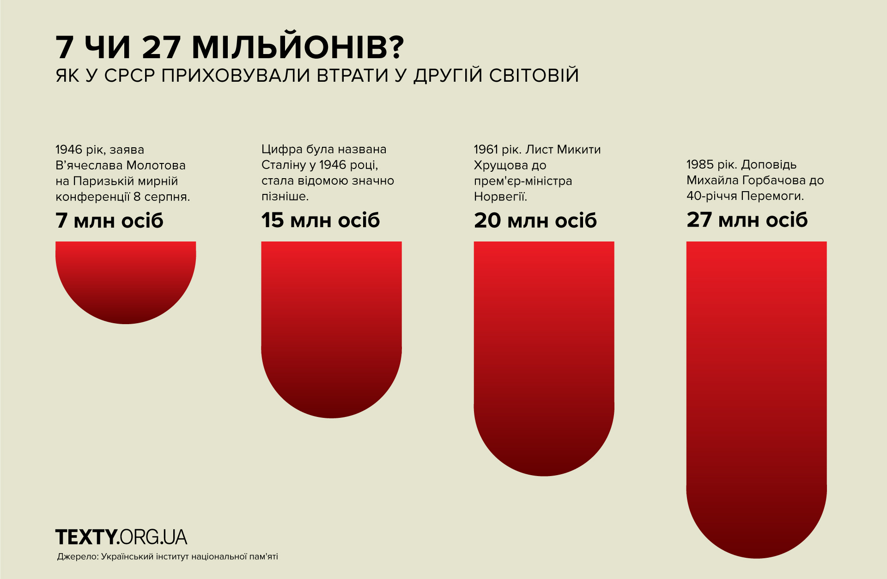
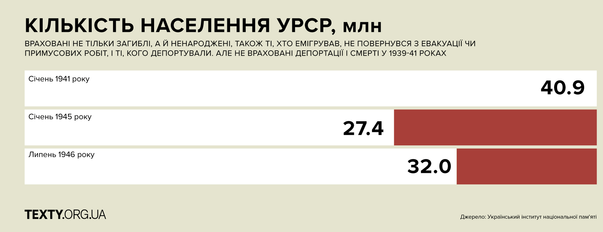
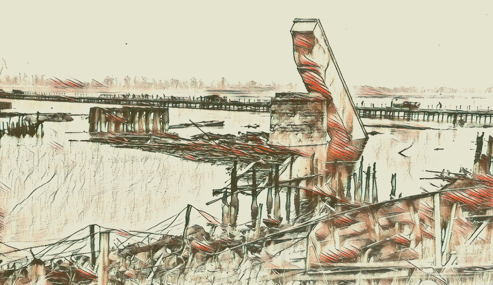
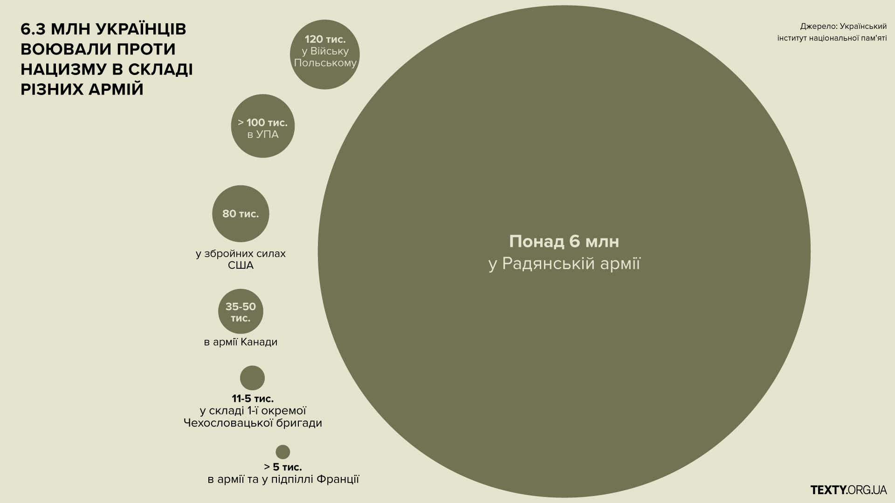
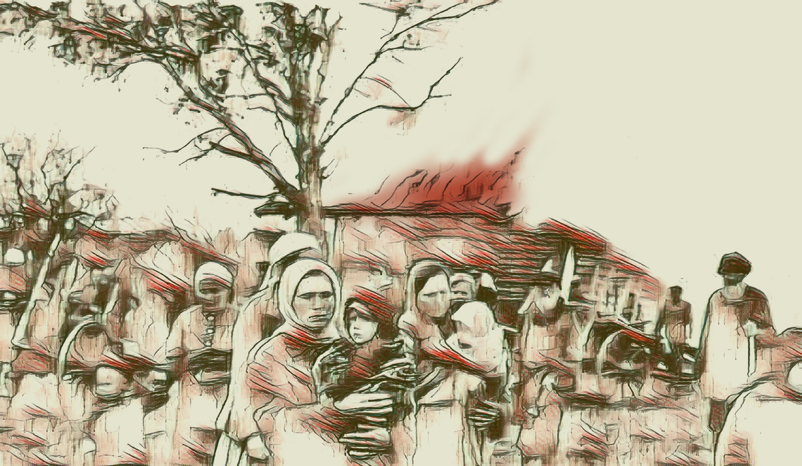

У січні 1945 року репортер газети Saturday Evening Post Едґар Сноу (Edgar Snow) надрукував матеріал під час своєї подорожі Україною. Він, зокрема, писав, що війна, яку дехто схильний називати «російською славою», мала б бути «по-справедливому визнана насамперед українською війною… Міста, промисловість, землеробство та людність жодної іншої європейської країни не зазнали таких тяжких нищень».
Війна в Україну прийшла у березні 1939 року. Почалася на Закарпатті, коли угорські війська, союзники нацистів, вдерлися на територію Карпатської України. Остання, скориставшись хаосом, який охопив Чехословаччину, щойно проголосила незалежність. Це був перший бій з нацистами у Європі. Від 2 до 6,5 тис. людей, що стали на захист української державності, загинули – ще до початку Другої світової.
З вересня 1939-го до червня 1941-го радянська влада депортувала 1,17–1,25 млн (за різними оцінками) мешканців новоприєднаних до СРСР територій на Заході України.
Мільйони українців воювали у складі Червоної армії та армій союзників, близько сотні тисяч виборювали власну незалежність у складі ОУН-УПА.
Українською землею пройшлися фронти: спочатку з заходу на схід, потім зі сходу на захід, руйнуючи все на своєму шляху.
22 червня 1941 року для України – день початку нацистської окупації. Це було рівно 70 років тому.
«Гітлер, як і Сталін, бачив в Україні геополітичний актив, а населення республіки сприймав як інструмент обробітку землі, який можна при потребі замінити або просто зігнорувати, – пише Тімоті Снайдер, професор історії Єльського університету в США, у своїй книжці «Криваві землі: Європа поміж Гітлером і Сталіним». – ... Україна годувала й прикривала Російську РСФСР і решту Радянського Союзу. Гітлер мріяв про щедрі українські грунти і вважав, що німці на цій землі добуватимуть більше, ніж радянська влада”.

Отже, на хліб і робочі руки мешканців України претендували і нацисти, і комуністи. До моменту початку війни селяни у Радянській Україні були розкуркулені, колективізовані і зведені до стану кріпаків. А під час Другої Світової їх грабували і використовували їхню працю обидві армії: німецька - під окупації, радянська - на початку і після війни.
Нацисти змушували українців до рабської праці, катували і морили голодом, вивозили працювати до Німеччини, розстрілювали і спалювали цілими селами, євреїв заганяли у гетто і знищували. Ті, хто уник насильницької смерті, часто гинули від голоду, холоду, тяжкої праці і хвороб.
Загальні втрати СРСР
Тисячі чи й десятки тисяч людей, загиблих за різних обставин під час війни у країні, що повторювала «никто не забыт», насправді забуті.

Що було не так з радянськими даними
Дослідники з різних країн досі по крихтам збирають цифри з різних джерел, щоб пригадати їх усіх, хоча дискусії навколо людських втрат в СРСР та в Україні зокрема, тривають. Найбільш поширеними у радянській історіографії щодо України були такі дані: 1,3 млн. воїнів загинули на фронті, 3,9 млн. мирних жителів винищили гітлерівці під час окупації, 2,2 млн. - примусово вивезли на роботу до Німеччини, 1,3 млн - загиблі військовополонені.
Ці дані викликають сумнів. Наприклад, цифра 1,3 млн. загиблих подавалась не з Наркомату оборони чи Генерального штабу, а запозичена з Наркомату соціального забезпечення УРСР - це кількість виплат пенсій та грошової допомоги сім'ям загиблих після 22 червня 1941 року військовослужбовців, у складі яких були непрацездатні особи. Але в це число не ввійшла величезна кількість загиблих, про яких є достеменні свідчення.
По-перше, тут не враховані ті загиблі, члени сімей яких були працездатними. По-друге, ті, що «пропали безвісти» – їхнім сім'ям допомогу не надавали і від податків не звільняли. По-третє, у число загиблих не ввійшли й ті, що були членами сімей, в яких на фронті загинув не один, а декілька осіб (наприклад, батько і син, брати і т.д.). А таке горе було в дуже багатьох сім'ях. Отже, ця цифра не відображає дійсності.
Людські втрати України - понад 10 млн
Загалом у цій публікації використані дані, наведені у 14-ти працях українських науковців (повний перелік джерел наведений в кінці матеріалу).
Лише через 55 років після закінчення війни в процесі підготовки всеукраїнської «Книги Пам'яті» внаслідок копіткої праці в архівах встановлено, що безповоротні військові втрати України становили 4,1 млн. людей.
На території України, окупованій гітлерівцями, загинуло понад 5,7 млн (4,148 млн цивільних людей - разом із Закарпатською областю і Кримом, і 1,571 млн військовополонених). Серед загиблих було також 1,5 млн євреїв.
2,4 млн українців було вивезено з України (якщо рахувати включно із Закарпаттям і Кримом).
400-450 тисяч з них загинули.
Таким чином, лише безповоротні людські втрати України у Другій світовій становлять понад 10 млн осіб. У це число не ввійшли військовослужбовці з України, які загинули від 1 вересня 1939 р. до 22 червня 1941 р. на радянсько-польському і радянсько-фінському фронтах, загиблі вояки УПА, а також радянські партизани.
Лише 1990 року вперше з’явилась офіційна цифра втрат збройних сил СРСР — 8,6 мільйонів. Нині вважається більш правдивою цифра у понад 10 мільйонів, а німецька армія втратила 2,8 мільйона.

Графіка нижче інтеравтивна, скрольте вниз.
Як скоротилося населення великих міст України за час окупації
2,3 смерті на одне народження припадало в окупованій Україні «через природні причини» (народилося 1,1 млн дітей, померло 2,6 млн осіб).
Голодні, виснажені тяжкою працею, без належного одягу й взуття, без медичної допомоги, українці під час окупації масово помирали від хвороб. У 1943-44 роках в Україні лютували тиф, кишкові й венеричні хвороби, дитячі інфекції. Наприкінці 1943 року у зайнятих Червоною армією регіонах України офіційно було зареєстровано 158 тис. випадків захворювань на висипний, черевний і поворотний тиф та дизентерію. Поширеною заразною хворобою в окупованих німцями районах була короста, на яку хворіло 23−63% населення.
Діти й підлітки страждали від дистрофії, рахіту, цинги, туберкульозу, кору, дизентерії, скарлатини.
Позбавлення українців медичного обслуговування було політикою нацистів, спрямованою на зменшення чисельності місцевого населення.
«Ні в якому разі не варто вводити німецьке медичне обслуговування для місцевого населення східних областей. Наприклад, за будь-яких умов не повинні робитися щеплення та інші оздоровчі заходи для населення України, воно для нас − ніщо» йшлося у директиві начальника канцелярії нацистської партії Бормана міністру східних окупованих територій Розенбергу, липень 1942 року.
680 днів тривали наступальні операції на території України. У них було вбито і поранено щонайменше 3,5 млн воїнів Радянської Армії
40% від матеріальних втрат СРСР у Другій Світовій війні становили збитки України, це 285 млрд карбованців, що тоді було еквівалентно 100 млрд доларів.
700 міст та 28 тис. сіл зруйновано в Україні.
45,1% житлового фонду зруйновано або виведено з ладу.
1,8 млн житлових будинків у селах зруйновано
10 млн осіб залишилися без даху над головою після закінчення війни.
Також знищено:
5,6 тис. мостів
1,916 залізничних станцій
33 тис. навчальних закладів
16 тис. підприємств
18 тис. медзакладів.
19,2 тис. бібліотек

550 найкращих підприємств евакуйовано з України до Росії, після війни їх не повернули.
Втрата потужностей житлово-комунальної системи:
Водогони – 87,6%
Каналізація– 88,6%,
Очисні підприємства – 87,3%,
Електростанції – 88,2%,
Газифікації – 80,0%,

Радянські нагороди
Хоча кількість нагород не завжди правильно відображала дійсну звитягу воїнів, все ж вона була її певним показником. Як бачимо, що серед радянських військовослужбовців, нагороджених під час війни урядовими нагородами, українці становили досить вагому частку.
Тричі Героєм Радянського Союзу став льотчик Іван Кожедуб – уродженець Сумської області.
32 з 115 двічі Героїв Радянського Союзу, удостоєних цього звання під час війни – українці та уродженці України.
Війна за українські ресурси
Україна була ключовою ланкою гітлерівського Плану голоду (Der Hungerplan).
Цей план передбачав голодування жителів окупованих територій СССР для того, щоб отримати додаткові продукти харчування для німецьких військ і населення Німеччини.
Власне, цей план і втілювався після вторгнення у Радянський Союз. Окупанти грабували селян, обмежували постачання продовольства у міста, не годували полонених у концентраційних таборах.
Німецький генштаб у серпні 1940 року дійшов висновку, що Україна «у сільськогосподарському й промисловому плані — найцінніша частина Радянського Союзу». Герберт Бакке (Herbert Ernst Backe), один із чільних цивільних економістів, у січні 1941 року доповів Гітлеру, що «окупація України звільнить нас від усіх економічних проблем».
Значення сільськогосподарського потенціалу УРСР добре розуміли як радянське, так і німецьке керівництво. Цей фактор, серед іншого, дозволяє стверджувати, що війна Німеччини з СРСР була також і війною за Україну.
22 липня 1942 року мрія нацистів збулася: вони отримали всю українську землю, разом із людьми, що на ній працювали. На відміну від промислових спеціалістів (їх вивозили в тил разом із підприємствами), селяни просто не встигали виїхати. Бо радянська влада насамперед намагалася евакуювати з села важливіші для неї ресурси - врожай, трактори та худобу.
Рятували врожай, трактори та худобу
Одразу після вторгнення, 60-70% працівників МТС (машинно-тракторних станцій) мобілізували, а ті, хто залишилися в селі, кинулися збирати врожай. З колгоспів до армії забрали також найпотужніші трактори і найкращих коней.

Протягом місяця 35 тисяч жінок без відриву від роботи опанували професії трактористок і комбайнерок, щоб замінити тих, хто пішов воювати. На полях працювали по 20 годин на день, аби встигнути відправити збіжжя на Схід. Що їстимуть селяни, які залишалися вдома, радянську владу мало хвилювало.
Окрім збору врожаю, сотні тисяч сільських жителів, переважно жінки та підлітки, будували оборонні споруди.
Тим часом німецька армія швидко просувалася, іноді селяни працювали під кулями і бомбами, хоча на Правобережжі встигли небагато: десь не змогли навіть зібрати врожай, десь не встигли обмолотити і вивезти вглиб країни.
Але у восьми східних областях на 11 жовтня 1941 року колгоспи виконали 93,8% від плану збору врожаю. 52,9% скошеного хліба обмолотили. З пізніми культурами не встигли: зібрали лише четверту-шосту частину врожаю овочі, соняшника, картоплі.
Одночасно селяни продовжували виконувати плани по заготівлі сільгосппродукції: м’яса, яєць, молока, вовни, шкур тощо. У вересні 1941 року, наприклад, план по заготівлі м’яса виконали на 80,5%.
За свою працю на межі можливостей селяни нічого не отримували. В той час вони не мали навіть паспортів і їхнє становище можна найкраще описати словом «кріпацтво».
Ось як зображена тодішня ситуація у праці «Сільське господарство України в роки Великої Вітчизняної війни (1941–1945 рр.)»:
«Виплати на трудодні (денну норму найпростішої праці, записували 0,5 трудодня, всього було 9 видів робіт) як грошові, так і натуральні, у більшості господарств було призупинено, оскільки для цього не було ані коштів, ані продукції, що майже повністю забиралися державою на потреби війни. Водночас селяни змушені були, крім надзвичайно обтяжливих обов’язкових поставок сільськогосподарської продукції, сплачувати державі ще й грошові податки, що дощенту виснажувало й так неймовірно збіднілі сім’ї».
Більше того, сільськогосподарський податок з початком війни збільшили на 100% (у грудні 1941-го підвищення скасували, натомість ввели військовий податок).
Плани по заготівлі сільгосппродукції (розвернути)
Щороку кожен селянський двір повинен був здавати державі за низькими цінами продукцію зі свої присадибної ділянки. Причому м’ясо і яйця треба було здавати, навіть якщо в сім’ї не було ні корови, ні свині, ні курей.
Скільки щорічно треба
здати державі: |
Колгоспники: |
Одноосібники: |
| М’ясо, кг |
32-36 |
64 - 72 |
| Яйця, шт |
150 |
200 |
| Сир - бринза, кг |
1 |
1,2 |
| Свинячі шкури |
1 |
1,5 |
| Вовна, г з кожної вівці |
900 |
1200 |
| Картопля, центнери |
8 |
14 |
Паралельно зі збором врожаю з українських сіл у 1941-му на початку 1942-го вивозили до Росії сільськогосподарську техніку та худобу. І трактори, і корови долали тисячу-півтори кілометрів своїм ходом.
56,8% поголів’я великої рогатої худоби, 64,5% овець та 7,6% коней вивезли з колгоспів правобережних областей на Лівобережжя до 10 вересня 1971 року. Загалом з України вивезли 6 млн корів та сотні тисяч тварин інших видів. Пізніше, після вигнання нацистів, українські колгоспи отримають у якості допомоги від інших республік та Червоної армії близько 300 тиc. коней та корів, 500 тис. овець - значно менше, ніж було вивезено. Про повернення сільськогосподарської техніки нічого не відомо.
Основні шляхи були зайняті військами, тому трактори їхали другорядними сільськими дорогами, де часто ламалися, застрягали і залишалися.
56,4 тисячі тракторів з наявних 72,28 тисяч у МТС Правобережжя та Лівобережжя планувалося евакуювати. 20,3 тисячі з них вивезли за межі України: переважно у Курську, Воронезьку та Ростовську області, інші покинули по дорозі.
Худобу гнали навпрошки через поля - щоб заодно знищити і не залишати ворогові врожай, який не встигли зібрати. Тварини гинули від хвороб і бомбардувань, тікали й погоничі, кинуті в дорозі напризволяще. Іноді загублених корів підбирали місцеві селяни.
Тварин, яких не встигли вивезти, часто забивали і віддавали м’ясо на потреби армії, іноді їх роздавали місцевим селянам.
Гасло евакуації ресурсів, що тривала одночасно з відступом Радянської Армії: «Нічого не залишати ворогу». Залишену колгоспну сільгосптехніку виводили з ладу, знищували врожай і продовольство.
Сім’ї колгоспників евакуйовували у значно менших масштабах, загальних даних немає, є лише розрізнені цифри, і вони скромні. Наприклад, планувалося вивезти усього 57 тисяч сімей у райони Поволжя, з них до 10 жовтня 1941 року виїхали лише 10 тисяч родин.
Це й не дивно, українці (а особливо селяни) - не поспішали евакуюватися. Судячи із родинних розповідей, які зібрала редакція Текстів у багатьох регіонах Центральної України після відступу Червоної армії німців зустрічали з квітами - люди сподівалися на повернення нормального «дореволюційного» укладу життя. Вони не знали, що їх вважають за нижчу расу. Ілюзії розвіялися швидко.
Те, що залишилось, відібрали окупанти
Мільйони українських селян залишилися в окупації зі своїми скромними запасами продовольства, на які у німецької армії були дуже великі плани. Як і на самих селян.
«Загальне напружене продовольче становище в Німеччині більше не дозволяє поновлювати склад обозів і постачання за її рахунок, - йшлося в наказі «Про постачання військ» від 16 червня 1941 року. Про це повинен пам’ятати кожен командир і начальник під час окупації у країні ворога. Для збереження запасів у Німеччині війська повинні жити за рахунок місцевого сільського господарства».
Про масштаби пограбунку селян свідчить цифра: 11,6 млн продовольчих посилок надіслали додому до Німеччини німецькі солдати та офіцери зі східного фронту з початку вторгнення і до вересня 1941 року.
Однак окупанти швидко зрозуміли, що пограбунком довго ситий не будеш і взялися налагоджувати систему викачування ресурсів і використання робочої сили. Встановили таку послідовність розподілу продуктів харчування:
«1) для діючої армії, 2) для решти військ на ворожій території, 3) для військ, що перебувають у Німеччині, 4) для німецького цивільного населення і, в останню чергу, для населення окупованих країн».
Зберегли й колгоспи, перейменувавши їх на «державні маєтки», селян змушували працювати по 18-20 годин на день, за ухилення і спротив - били, спалювали хати або вбивали.
Німці збирали покинуті трактори, намагалися відловити і повернути на колгоспні ферми всю розгублену чи привласнену худобу. Подекуди окупанти повертали земельні наділи тим, хто володів ними до колективізації - в надії отримати побільше продовольства в результаті.
Водночас селян обклали податками - в райхскомісаріаті «Україна» їх було 12 видів: на всю худобу та власність, навіть за велосипед і домашнього кота треба було платити. Був серед них і податок «за звільнення від радянської влади».

Ще дві форми пограбування селян: грошова реформа, в процесі якої радянські гроші практично конфіскували та обов’язкове страхування людей та майна.
Голод, вогонь і знищення
Але продовольства все одно не вистачало. І тоді окупанти вирішили забрати його у селян: «Хліб, велика рогата худоба, домашня птиця – все це має бути вилучене у населення для армії, – йшлося у наказах керівництва Вермахту військам, які наступали на Україну, – за найменший опір – розстрілювати на місці, а будинки – спалювати»
У другій половині грудня 1941 — січні 1942 року війська і поліція конфіскували усі наявні запаси хліба в колгоспах, радгоспах та у населення.
У 1942–1943 роках села Київщини, Вінничини, Житомирщини, Сумщини та інших областей охопив голод.
А восени 1943-го німці заборонили селянам сіяти озимі, бо розуміли, що від наступного врожаю їм уже нічого не перепаде.
Згідно таємної директиви райхсмаршала Германа Ґерінґа (Hermann Wilhelm Göring) від 7 вересня 1943 р. при відступі нацистам належало знищити сільськогосподарську базу, вивезти усю техніку та врожай та евакуювати робітників.
Солдатам також наказували знищувати всі споруди і запаси продовольства, труїти криниці, псувати сільськогосподарські машини, палити будинки, млини та сіно, топити човни і мінувати дороги. У нашій графіці про спалені села можна побачити, що значна кількість знищених сіл - саме осінь 1943-зима 1944 року.
У цей період з України вивезли до Німеччини або знищили 56 972 трактори, 24 556 комбайнів, 33 038 сівалок, 16 988 молотарок, 45 688 плугів, 6479 двигунів, 5092 автомобіля та інші сільськогосподарські машини й реманент. Навіть вози та сани вивезли - загалом 1,2 млн одиниць.
У загальній сумі прямих збитків (285 млрд. крб), заподіяних окупантами економіці і населенню України, прямі збитки колгоспів, радгоспів та МТС становлять майже 32,5%.
Після вигнання німецької армії українських селян чекали роки відновлення сільського господарства: знову рабська праця, надмірні плани хлібозаготівлі і голод.
Але попри тяжкі умови життя в окупації, серед селян були й ті, що не раділи поверненню радянської влади, що свідчить також про те, наскільки складним було життя до війни.
Розправа над селянами. Знищені села
За час німецької окупації України було знищено понад 1370 населених пунктів. Жертвами подібних каральних операцій стали щонайменше 50 тис. осіб, зазначають укладачі анотованого покажчика «Спалені села» (Український Інститут національної пам’яті, 2012 рік).
Згадане видання містить інформацію про села, селища та хутори, знищені в ході німецьких каральних акцій на території різних областей України у 1941-44 роках. Матеріали зібрані на основі документів архівних установ України, опублікованих джерел та літератури, присвячених темі.
Знищення українських сіл та їхніх мешканців було частиною плану «Ост» (Generalplan Ost): стратегії винищення і поневолення слов’янських народів, яку провадив Третій рейх. Слов’яни, що проживали у країнах Східної Європи та європейської частини СРСР, почасти підлягали онімеченню, почасти – депортації за Урал, у Сибір та Центральну Азію (60–70 млн) або знищенню (20–40 млн). На включених до складу Великонімеччини територіях мало залишитися 20–30 млн у якості рабів арійської раси.
Найвідомішою історією, що демонструвала реалізацію цього плану, стала Корюківська трагедія - не про село, а про містечко, у якому 1-2 березня 1943 року окупанти розстріляли 6,7 тис. місцевих мешканців та спалили 1290 будинків.

Це було найбільше поселення в Європі, повністю знищене нацистами в рамках каральної операції під час Другої світової війни, хоча в радянські часи цей факт замовчувався - до 2000-х років там не було навіть пам’ятника. Однією з причин замовчання було те, що приводом для каральної акції став напад на німецький гарнізон Корюківки радянських партизанів. В ході масового вбивства партизанський підрозділ, кількісно більший за карателів, залишався у лісі, байдуже спостерігаючи за діями ворога.
Натомість символом спалених нацистами сіл було обрано білоруське село Хатинь, де спалили 150 мешканців, а по війні спорудили величезний меморіал, куди масово возили туристів. Таким чином радянська влада намагалася нівелювати власний злочин, здійснений у місцевості з дуже подібною назвою - Катинь. Йдеться про масове вбивство польських громадян у 1940 році - за іронією, цю величезну братську могилу знайшли під Смоленськом саме німецькі окупанти.
Загалом окупанти часто карали українських селян за дії партизанських загонів, що діяли неподалік, особливо у лісистій місцевості. Іноді місцеві жителі опинялися між молотом і наковальнею: за допомогу партизанам їм загрожувала розправа нацистів, за відмову допомагати їх могли покарати партизани. Наймасовіші розправи над українським населенням були вчинені у селах і містечках Полісся:
- Кортеліси (Волинська область) - вбито і спалено 2875-2992 місцевих жителі.
- Копище (Житомирська область) - вбито, утоплено, замучено і спалено 2887 осіб (інші дані - від 650 до 3236).
- Козари (Чернігівська область) - вбито і спалено 3908 - 4800 осіб.
Маловідомою і не вивченою до кінця залишається роль у цих каральних акціях угорських союзників Гітлера, виведених після перших невдач на фронті в тодішній німецький тил. Особливо угорці лютували на Поліссі, жорстоко розправляючись із мирними українцями та білорусами - лише на Чернігівщині (за даними УІНП 2103-го року) вони взяли участь у знищенні до 60 тис. цивільних мешканців.
Науковці зазначають, що Крим (до сталінської депортації татар – Кримська АРСР у складі РРФСР) - серед найбільш постраждалих від війни регіонів: через руйнування інфраструктури внаслідок запеклих боїв, каральні акції та примусове виселення корінних народів півострова.
За підрахунками дослідників, за період німецько-румунської окупації (з листопада 1941-го до травня 1944 р.) у Криму знищено 127 населених пунктів та 130 тис. мирних жителів, але детальних даних про це досі не зібрано.
Загалом у згаданому вище виданні УІНП “Спалені села” часто не вистачає конкретних фактів про виконавців злочину, немає однозначності щодо кількості загиблих, іноді навіть не вказана дата трагедії. Кілька сіл із названих там були знищені не в ході каральних акцій чи виселення населення з лінії фронту, а безпосередньо в ході бойових дій вермахту із Червоною армією (і навіть ЧА з УПА, як-от Гурби на Рівненщині).
Деяку інформацію авторам удалося вточнити з інших видань - в першу чергу варто подякувати історикам-краєзнавцям Володимиру Чухну (Сумщина) та Сергію Бутку й Олександру Лисенку (Чернігівщина).
Якщо ви можете уточнити дані щодо того чи іншого спаленого села, вас із радістю вислухають в Інституті національної пам’яті (uinp@memory.gov.ua, в темі листа краще вказати “Спалені села”).
Сотні таборів і гетто в окупованій Україні
«Слов’яни повинні працювати на нас, а в разі, якщо вони нам більше не потрібні, нехай умирають...»
Директива Гітлера про введення в дію генерального плану «Ост» (3 липня 1942 року).
Точно підрахувати, скільки вихідців з України потрапило і загинуло у нацистських таборах - неможливо, оскільки таких в’язнів і жертв рахували як радянських, польських чи угорських громадян.
57% з п’яти мільйонів полонених на радянсько-німецькому фронті загинули від голоду, холоду, знущань та хвороб у тимчасових таборах. Значна кількість з них – на території сучасної України, де під час окупації існувало 242 табори для військовополонених та 2 концтабори (Янівський у Львові та Сирецький у Києві).
Протягом 1941-44 років нацисти також створили 78 таборів примусової праці для євреїв, деякі з них розташовувалися безпосередньо у гетто (а їх в Україні було 304); 7 виправно-трудових таборів, 15 таборів примусової праці та 23 пересильних табори, 66 гестапівських тюрем.
У довіднику про табори і гетто зібрана інформація про те, де були розташовані ці табори, коли вони функціонували, по деяких - є дані щодо кількості в’язнів і загиблих (ви можете побачити це на нашій карті).
На графіці враховані та відображені неповні дані, зібрані у
Довіднику про табори, тюрми та гетто на окупованій території України (1941-1944).
Автори довідника у передмові називають його першою спробою зробити класифікацію таборів на окупованій території України у 1941-1944 рр. відповідно до міжнародної класифікації, але попереджають, що в документах іноді трапляються суперечливі характеристики певних таборів - їх зберегли у визначеннях.
«Попри суттєві відмінності у призначенні і специфіці функціонування, усі табори були ланками єдиної системи, в основі якої був сконструйований безупинний конвеєр смерті», йдеться у довіднику. Також зазначається що табори на окупованих східних територіях мали найбільш жорстокий характер, що визнають і німецькі дослідники. У всіх таборах на території окупованої України спостерігалася висока смертність, голод, відсутність медичної допомоги, тортури, знущання над в'язнями, масові знищення.
Класифікація обʼєктів (розвернути)
Концентраційний табір – місце запобіжного ув'язнення людей з політичних, національних та релігійних мотивів. Рішення про ув’язнення ухвалювала державна таємна поліція – гестапо. У такому таборі в’язні перебували без слідства й суду, без встановлення терміну ув’язнення, в умовах особливо суворого режиму утримання (ізоляції). Їх знищували непосильною каторжною працею, голодом, тортурами. Концтабір підпорядковувався інспекції концентраційних таборів Третього райху. Концтабори охороняли війська СС.
Виправно-трудовий табір – місце ув'язнення громадян на визначений термін (від 21 до 56 днів, з можливістю продовження) за ухилення від трудової повинності, трудові порушення, з подальшим скеруванням на попереднє місце роботи або до концтабору. Такий табір з особливо суворим режимом утримання був підпорядкований комендатурі СБ (служби безпеки) та поліції безпеки. У радянських архівних матеріалах вони здебільшого названі концентраційними таборами. Можливо, що частину виправно-трудових таборів зафіксовано під категорією «табір цивільного населення».
Гетто – частина території населеного пункту, виділена для примусового утримання євреїв з метою їхньої ізоляції та подальшого знищення. Існували відкриті та закриті гетто. Майже всі відкриті гетто перед ліквідацією були перетворені на закриті із суворою ізоляцією. Управління гетто здійснювалося через єврейські ради. Окремі гетто були перетворені у табори примусової праці для євреїв. Протягом війни та під час ліквідації гетто єврейське населення знищували або відправляли до концентраційних таборів.
Табір примусової праці для євреїв – місце ув'язнення осіб єврейської національності, перетворене з гетто або новоутворене, куди завозили працездатних євреїв з гетто і використовували для важких робіт. Був підпорядкований керівництву поліції та СС. У східних окупованих областях ці табори виникли відповідно до розпорядження райхсміністра окупованих східних областей про введення примусової праці для єврейського населення від 16.08.1941 року. В архівних документах немає суворих розмежувань між гетто та таборами примусової праці для євреїв, тому до цієї категорії було зараховано тільки ті місця примусового утримання, в документах про які зафіксовано факти використання примусової праці єврейського населення.
Тюрма, гестапівська тюрма – місце запобіжного ув'язнення та утримання з політичних мотивів із застосуванням до ув'язнених насильницьких дій виняткової жорстокості, включно з катуваннями та вбивствами. Більшість таких тюрем були підпорядковані гестапо (таємній державній поліції) або СБ (службі безпеки).
Пересильний табір – збірний пункт для виряджання ув'язнених на примусову працю до Третього райху. Цю категорію таборів у радянських документах часто плутають з концентраційними таборами. Табір зараховують до цієї категорії за наявності даних про відправлення в'язнів на примусові роботи до Третього райху. Більшість таких таборів зазначена під категорією «табір цивільного населення».
Трудовий табір – місце для ізоляції населення, змушеного працювати на підприємствах, будівельних роботах тощо. Достатніх ознак для зарахування трудового табору до виправно-трудового табору або табору примусової праці для євреїв немає.
Табір цивільного населення – умовна категорія. Цю категорію визначено через відсутність чітких ознак конкретного типу табору.
Шталаг (StaLag) – стаціонарний табір для військовополонених рядового та сержантського складу.
Дулаг (DuLag) – збірний та пересильний пункт для військовополонених та інтернованих цивільних громадян.
Офлаг (OfLag) – стаціонарний табір для військовополонених офіцерів.
Табори для військовополонених не визначаються спеціально, проте в деяких документах вони зазначені.
Голодні міста
На початку березня 1942 року у щоденнику Геббельса з’явився запис: «Становище з продовольством в окупованих східних областях надзвичайно скрутне. Там помирають від голоду тисячі й десятки тисяч людей, що цілковито нікого не цікавить».
Сотні тисяч мешканців українських міст померли від голоду: відомо про масові смерті у Києві, Дніпропетровську, Вінниці, Запоріжжі, Сумах. У жодному місті населення не було охоплене «плановим постачанням». Селянам також часто забороняли продавати їжу міським жителям, а міських жителів не пускали до сіл за продовольством.
Лише в Харкові, за неповними даними, від голоду померли 110-120 тис. осіб. Загалом кількість міського населення 1941 по 1945 роки зменшилася на 43,8% (з 13,7 до 7,7 млн).
Остарбайтери
48% остарбайтерів з СРСР були з України
Наприкінці 1941 року З України в її нинішніх межах, тобто включаючи Закарпаття і Крим, упродовж 1941 - 1944 років депортовано 2 402 234 мешканці.
Перший потяг з 1117 остарбайтерами рушив 18 січня 1942 року з Харкова. Із Києва перші робітники виїхали 22 січня (1 500 осіб). Це були ті, хто їхав до Німеччини добровільно - обдурені пропагандою, яка розповідала, як чудово там жити і працювати.

Але вже через місяць-другий, коли просочилися додому звістки про рабську працю і нестерпне життя тих, хто поїхав, окупанти влаштовували облави, щоб виконати плани з відправки робочих рук до Німеччини.
У Німеччині катастрофічно не вистачало робочої сили: солдати, що мали б повернутися на свої робочі місця восени 1941-го, після стрімкого розгрому Червоної Армії, не повернулися. «План Барбароса» провалився, війна затягнулася. Нацисти рятували економіку за рахунок військовополонених, в’язнів концтаборів та цивільних осіб з окупованих територій. Українців, як і вихідців з Росії та Білорусі, називали «остарбайтерами». Вони носили на грудях синьо-білі нашивки «OST», їм платили вдвічі-втричі менше, ніж працівникам із західних країн, утискали в правах, селили в жахливих умовах, погано годували та жорстоко карали за найменшу провинність.
«Остарбайтерів» відправляли до Німеччини аж до 1944 року. Вони працювали там до травня 1945-го: у сільському господарстві, у видобувній та хімічній промисловості, на металургійних підприємствах, на будівництві та транспорті.
Джерела інформації:
- Гітлер, Сталін і Україна: безжальні стратеґії, Юрій Шаповал, 2020 рік
- Друга світова війна: український контекст, Юрій Шаповал, 2015 рік
- Україна в роки Другої світової війни: спроба нового концептуального погляду. Іван Патриляк, Микола Боровик, 2010 рік.
- Українська Друга світова 1939 - 1945 - проєкт Українського інституту національної пам’яті
- Демографічні втрати України у роки Другої світової війни, Олександр Лисенко, Олександр Перехрест, 2015 рік.
- Сільське господарство України в роки Великої Вітчизняної війни (1941–1945 рр.), 2010 рік
- Україна під нацистською окупацією: спалені села. (1941–1944 рр.) Анотований покажчик
- Інститут дослідження Голодомору
- Енциклопедія історії України
- Український історичний журнал
- Повоєнні репресії проти військовослужбовців (1944-1953 рр.), Сергій Василенко
- Український фактор у Другій світовій війні, Олександр Перехрест.
- Меморіальний музей тоталітарних режимів "Територія Терору"
- Довідник про табори, тюрми та гетто на окупованій території України (1941-1944). Державний комітет архівів України; Український національний фонд «Взаєморозуміння і примирення».
- Україна в Другій світовій, брошура Українського інституту національної пам’яті.
- Центр досліджень визвольного руху.
- Криваві землі: Європа поміж Гітлером і Сталіним, Тімоті Снайдер